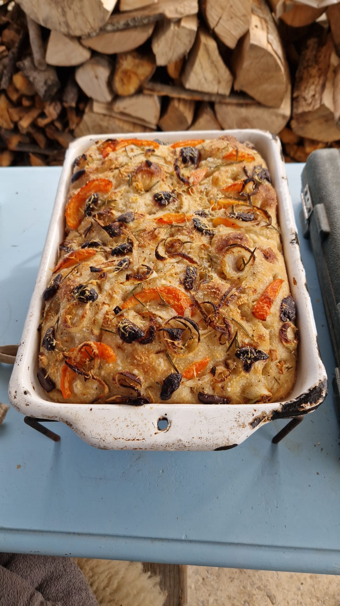

Frank dhe copa e fundit
Maja ime e brumir po rritej pothuajse jashte kavanozit, keshtu qe vendosa te pjek disa buke dhe gjithashtu te bej perseri nje focaccia. Mbreme e palosa brumin disa here dhe pastaj e vendosa ne te ftohte gjithe naten per nje fermentim te gjate.
Edhe pse perpiqem te mos i tregoj shume Frank-ut per planet e mia, Frank perseri i zbulon planet e mia. Kjo nuk eshte e pershtatshme sepse pastaj ai pyet pothuajse cdo pese minuta se kur do te jete gati herezia e shijshme krokante e lehte e zhytur ne vaj ulliri, hudher, rozmarine dhe kripe detare kelte.
Kete here e gjeta vecanerisht emocionuese per ta bere sepse ne vend te vetem ujit shtova gjithashtu pak sidra molle te bere vete ne brum. Ideja per te bere sidra molle me erdhi papritur kur po beja nje byrek me molle dhe kisha mjaft lekure dhe berthama te mbetura. Lengu po bubullonte bukur, por pas disa ditesh fillova te dyshoja nese nuk ishte duke u bere uthull. Uthull kam mjaft, keshtu qe thjesht e piva dhe nje pjese e perpunova ne brum.
Eshte bere focaccia ime me e shijshme deri tani. Ndersa shkruaj kete, Frank po fut copen e fundit ende te ngrohte ne goje. Buka nuk pati as mundesi te ftohej plotesisht :-)